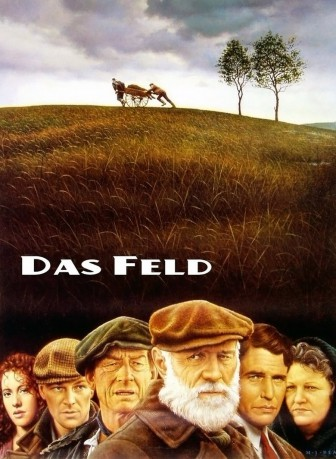
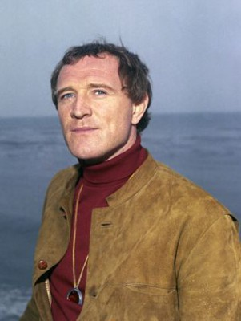
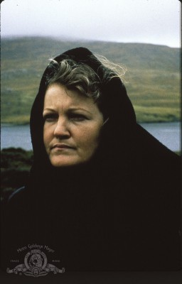

#11417 Das Feld
Auszeichnungen: für 1 Oscars nominiert
 
 IMDB-Wertung: 7.4 / 10
IMDB-Wertung: 7.4 / 10  Tomatometer: 43
Tomatometer: 43  Metascore: 0
Metascore: 0 
Irland in den 30ern: Jahrelang hat Dickschädel Bull McCabe das Feld einer jungen Witwe bewirtschaftet. Jetzt will die Frau den Grund versteigern. Bull ist sich sicher: Kein Mann wird es wagen, gegen ihn zu bieten. Aber ein junger Amerikaner der im Dorf seiner Herkunft nachspürt, hat keine Angst vor Bull.
Jahr: 1990
Dauer: 105 Minuten
FSK:
Land: Irland Studio: 20th Century FoxTonspuren:
Untertitel:
Auflösung: 1080p (1920x1080) Größe: 4741 MB
Genre: Thriller, Drama
Regisseur: Jim Sheridan
Drehbuch: Jim Sheridan, John B. Keane
Soundtrack: Elmer Bernstein
Darsteller:
-  Richard Harris als 'Bull' McCabe
 Sean Bean als Tadgh McCabe
Sean Bean als Tadgh McCabe- Frances Tomelty als Widow
-  Brenda Fricker als Maggie McCabe
 John Hurt als Bird' O'Donnell
John Hurt als Bird' O'Donnell- Ruth McCabe als Tinker Woman
- Jer O'Leary als Tinker Girl's Father
- Ronan Wilmot als Tinker
 Sean McGinley als Father Chris Doran
Sean McGinley als Father Chris Doran Malachy McCourt als Sergeant
Malachy McCourt als Sergeant Brendan Gleeson als Quarryman
Brendan Gleeson als Quarryman Tom Berenger als Peter - The American
Tom Berenger als Peter - The American- David Wilmot als Boy at Dance
- Tom Jordan als Villager
- Noel O'Donovan als Tomás
- John Cowley als Flanagan
- Jenny Conroy als Katie - The Tinker Girl
- Joan Sheehy als 2nd Tinker Woman
- Frank McDonald als Quarryman
- Eamon Keane als Dan Paddy Andy
- Sara Jane Scaife als McRoarty Girl
- Rachael Dowling als Girl at Dance
- Sarah Cronin-Stanley als Girl at Dance
- Peadar Lamb als Paddy Joe O'Reilly
- Áine Ní Mhuirí als Priest's Housekeeper
- Máirtín Jaimsie als Villager
- Johnny Choil Mhaidhc als Villager
- Bina McLoughlin als Villager
- Spencer Callahan als Villager (uncredited)
Datei: X:\1990\Feld, Das (1990, FSK, 1920x1080).mkv seit 03.07.2019
Festplatte: Gemischt-01+Anime
 Es gibt insgesamt 52 Filme in der Gruppe '1990'
Es gibt insgesamt 52 Filme in der Gruppe '1990'